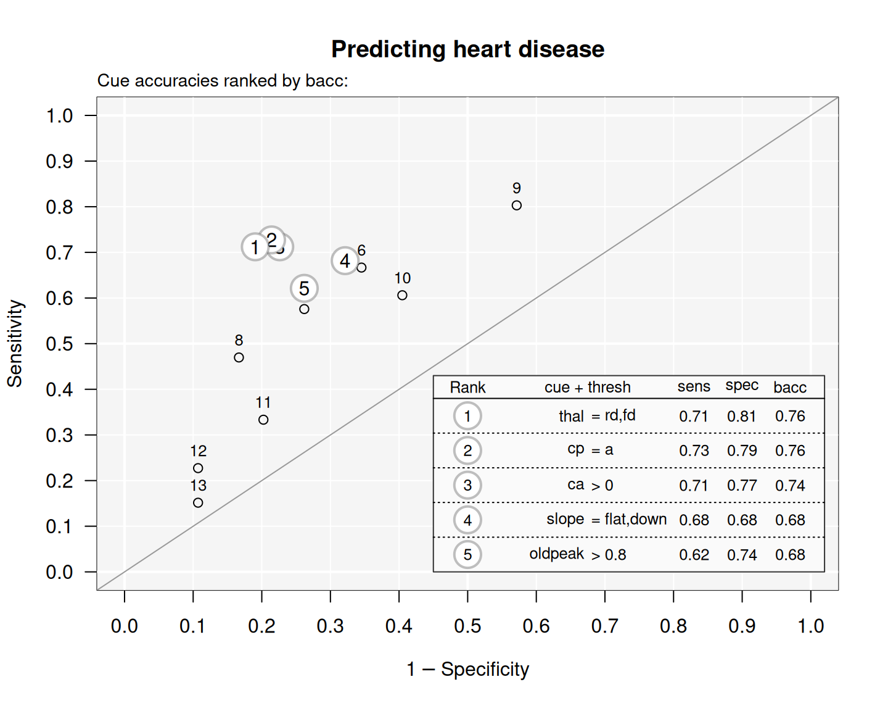

showcues plots the cue accuracies of an FFTrees object
created by the FFTrees function (as points in ROC space).
If the optional arguments cue.accuracies and alt.goal are specified,
their values take precedence over the corresponding settings of an FFTrees object x
(but do not change x).
showcues is called when the main plot.FFTrees function is set to what = "cues".
Usage
showcues(
x = NULL,
cue.accuracies = NULL,
alt.goal = NULL,
main = NULL,
top = 5,
quiet = list(ini = TRUE, fin = FALSE, set = TRUE),
...
)Arguments
- x
An
FFTreesobject created by theFFTreesfunction.- cue.accuracies
An optional data frame specifying cue accuracies directly (without specifying
FFTreesobjectx).- alt.goal
An optional alternative goal to sort the current cue accuracies (without using the goal of
FFTreesobjectx).- main
A main plot title (as character string).
- top
How many of the top cues should be highlighted (as an integer)?
- quiet
Should user feedback messages be suppressed (as a list of 3 logical arguments)? Default:
quiet = list(ini = TRUE, fin = FALSE, set = FALSE).- ...
Graphical parameters (passed to
plot).
See also
print.FFTrees for printing FFTs;
plot.FFTrees for plotting FFTs;
summary.FFTrees for summarizing FFTs;
FFTrees for creating FFTs from and applying them to data.
Other plot functions:
plot.FFTrees()
Examples
# Create fast-and-frugal trees (FFTs) for heart disease:
heart.fft <- FFTrees(formula = diagnosis ~ .,
data = heart.train,
data.test = heart.test,
main = "Heart Disease",
decision.labels = c("Healthy", "Diseased")
)
#> ✔ Created an FFTrees object.
#> ✔ Ranked 13 cues (optimizing 'bacc').
#> ✔ Created 7 FFTs with 'ifan' algorithm (chasing 'bacc').
#> ✔ Defined 7 FFTs.
#> ✔ Applied 7 FFTs to 'train' data.
#> ✔ Ranked 7 FFTs by 'train' data.
#> ✔ Applied 7 FFTs to 'test' data.
#> ✔ Expressed 7 FFTs in words.
# Show cue accuracies (in ROC space):
showcues(heart.fft,
main = "Predicting heart disease")
#> Plotting cue training statistics:
#> — Cue accuracies ranked by bacc
#>
